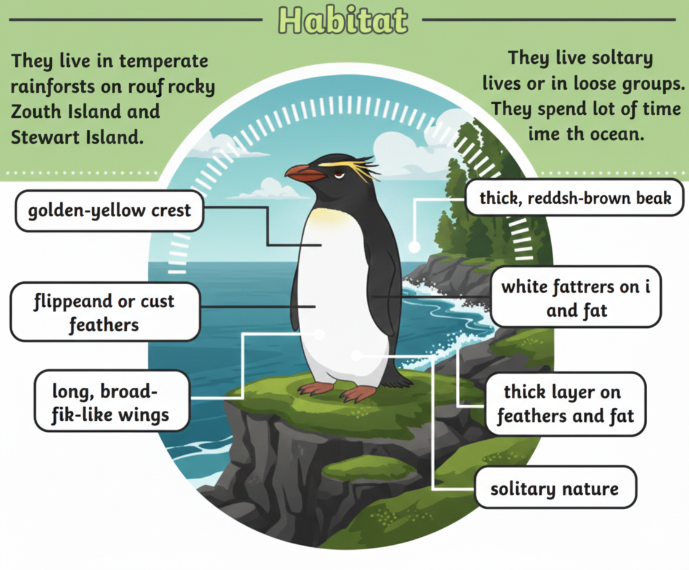
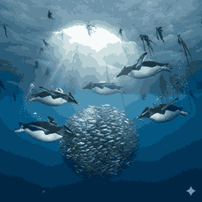

About Fiordland Penguins

Fiordland penguins are a rare species of crested penguins known for their yellow eyebrow-like feathers. They are shy birds and prefer remote forest and coastal areas.
Habitat

Fiordland penguins live along the southwest coast of New Zealand and nearby islands. They prefer dense forests, rocky shores, and hidden nesting locations.
Diet

Fiordland penguins mainly eat fish, squid, and crustaceans. They are skilled swimmers and hunt underwater for their prey.
Interesting Facts
- They are one of the rarest penguin species.
- They have bright yellow crest feathers above their eyes.
- They prefer nesting in hidden forest areas.
- They are mostly active during early morning and evening.